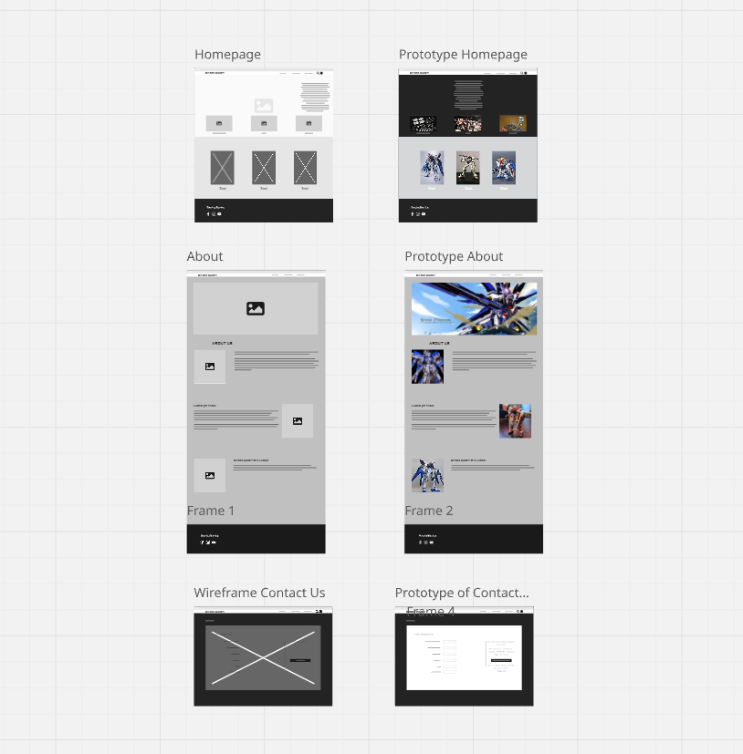
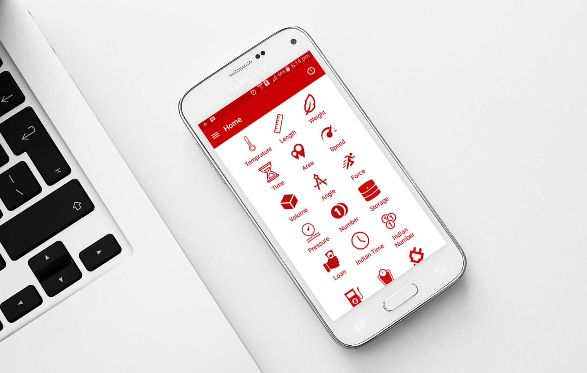

My Projects

Portfolio Design
A personal UI-based project portfolio website made from wireframes and stylized. I also showcase a clean layout based on user experience and technology choices.
Tools used: HTML, CSS

Wireframing & Prototyping
I practiced UI design strategy and user-centered wireframes and prototypes that serve as a foundation in modern software development practices.
Tools used: Miro, Figma, and Mockup

Advanced Unit Converter
A Java-based console application that converts multiple units and supports dynamic custom formula-based input using only Java code.
Tools used: Java OOP, File Handling